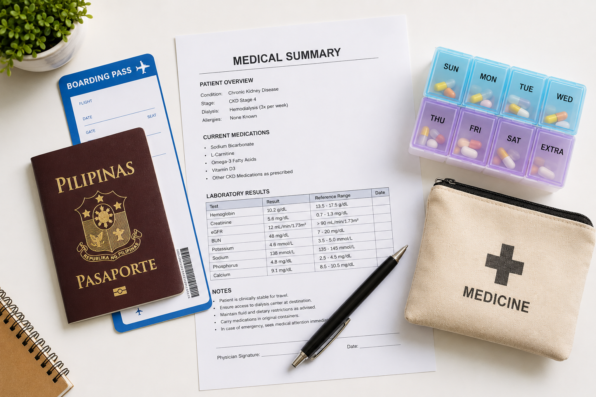
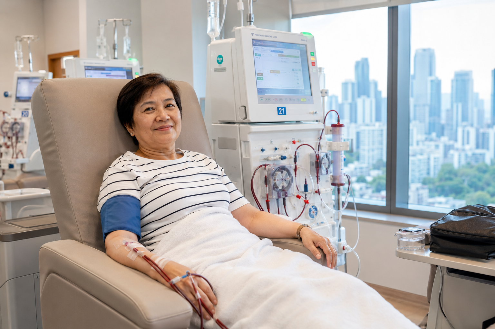
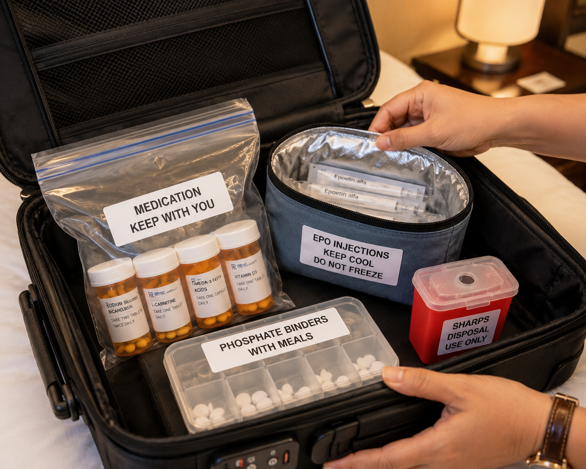
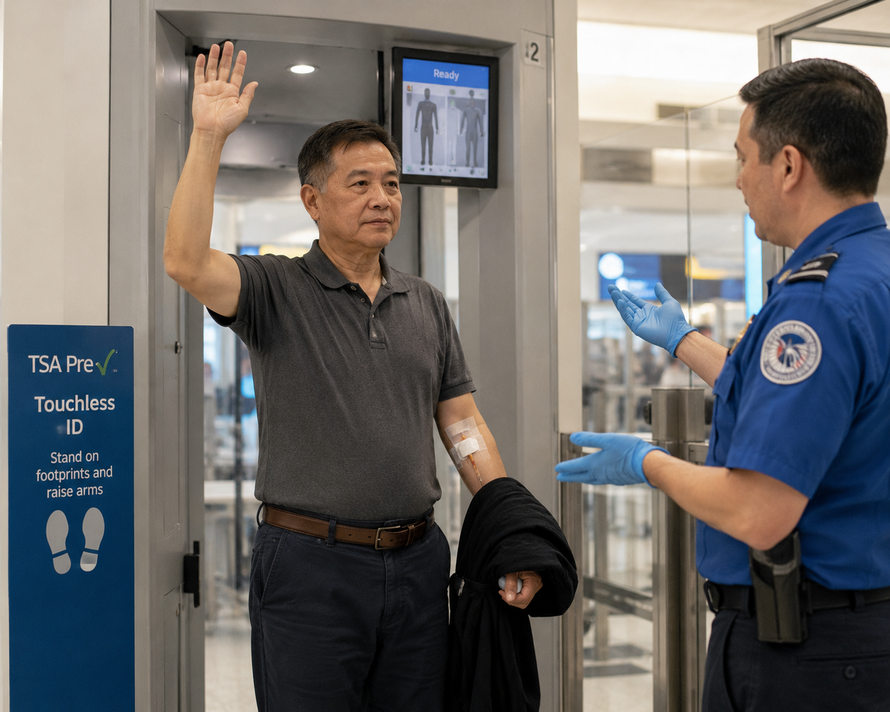
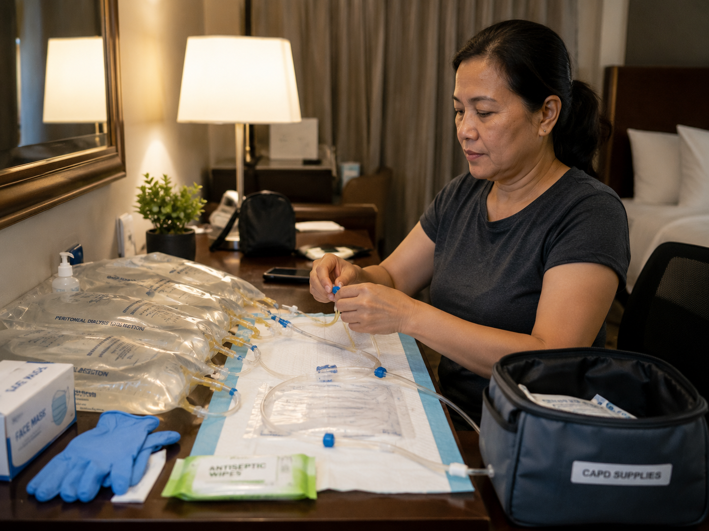

Start Planning at Least 6–8 Weeks AheadMagsimulang Magplano nang Hindi Bababa sa 6–8 Linggo ang AbanseMagsugod sa Pagplano nang Labing Menos 6–8 ka Semana ang AbanseMagsimulang Magplano nang Ali Bababa sa 6–8 Lutu ing Abanse
Travel is possible for most CKD and dialysis patients — but it requires significantly more lead time than for healthy travelers. Dialysis centers abroad must be booked weeks in advance, medications must be secured in sufficient supply, and your nephrologist must clear you to travel based on your current clinical stability.Ang paglalakbay ay posible para sa karamihan ng mga pasyenteng may CKD at diyalisis — ngunit nangangailangan ito ng mas mahabang lead time kaysa sa mga malusog na manlalakbay. Ang mga sentro ng diyalisis sa ibang bansa ay dapat na ireserbahan nang ilang linggo nang maaga, ang mga gamot ay dapat ma-secure sa sapat na supply, at ang inyong nefrologo ay dapat na mag-clear sa inyo na maglakbay batay sa inyong kasalukuyang klinikal na katatagan.Ang pagbiyahe posible alang sa kadaghanan sa mga pasyente nga adunay CKD ug diyalisis — apan nagkinahanglan kini og mas taas nga lead time kaysa sa malusog nga mga manlalakbay. Ang mga sentro sa diyalisis sa ubang nasod kinahanglan i-book nang pipila ka semana nang daan, ang mga tambal kinahanglan ma-secure sa igo nga suplay, ug ang imong nephrologist kinahanglan mag-clear kanimo sa pagbiyahe base sa imong karon nga klinikal nga katatagan.Ing paglalakbay ya posible para king karamihan ning deng pasyenteng may CKD at diyalisis — ngarud nangangailangan ini ning mas mahabang lead time kaysa sa deng malusog na manlalakbay. Deng sentro ning diyalisis sa ibang bansa ya dapat na ireserbahan nang ilaning lutu nang maaga, dening gamut ya dapat ma-secure sa sapat na supply, at ing inyong nefrologo ya dapat na mag-clear sa inyo na maglakbay batay king ka kasalukuyang klinikal na katatagan.

The most common mistake: booking flights and hotels before confirming dialysis availability. Always confirm the dialysis center first — not all centers accept visiting patients, and available slots are limited.Ang pinakakaraniwang pagkakamali: pag-book ng mga flight at hotel bago kumpirmahin ang availability ng diyalisis. Palaging kumpirmahin muna ang sentro ng diyalisis — hindi lahat ng sentro ay tumatanggap ng mga bisitang pasyente, at ang mga available na slot ay limitado.Ang pinaka-kasagaran nga pagkamali: pag-book sa mga flight ug hotel sa wala pa kumpirmahin ang availability sa diyalisis. Kanunay kumpirmahin una ang sentro sa diyalisis — dili tanan nga sentro nagdawat sa mga bisitang pasyente, ug ang mga available nga slot limitado.Ing pinakakaraniwang pagkakamali: pag-book ning deng flight at hotel bago kumpirmahin ing availability ning diyalisis. Papirming kumpirmahin muna ing sentro ning diyalisis — ali lahat ning sentro ya tumatanggap ning deng bisitang pasyente, at deng available na slot ya limitado.
Who should NOT travel without special precautionsSino ang HINDI dapat maglakbay nang walang espesyal na pag-iingatKinsa ang DILI kinahanglan mobiyahe nga walay espesyal nga pag-iingatSino ing HINDI dapat maglakbay nang alang espesyal na pag-iingat
Patients with recent hospitalization (<4 weeks), uncontrolled blood pressure, recent change in dialysis prescription, active infection, severe anemia (Hgb <80 g/L), severe fluid overload, recent cardiac events, or those on peritoneal dialysis with active peritonitis. Always get explicit clearance from your nephrologist.Ang mga pasyenteng may kamakailang ospitalisasyon (<4 linggo), hindi kontroladong presyon ng dugo, kamakailang pagbabago sa reseta ng diyalisis, aktibong impeksyon, malubhang anemia (Hgb <80 g/L), malubhang sobrang likido, kamakailang cardiac events, o ang mga nasa peritoneal dialysis na may aktibong peritonitis. Palaging kumuha ng malinaw na clearance mula sa inyong nefrologo.Ang mga pasyente nga adunay bag-ong pag-ospital (<4 ka semana), dili kontroladong presyon sa dugo, bag-ong pagbag-o sa reseta sa diyalisis, aktibong impeksyon, grabe nga anemia (Hgb <80 g/L), grabe nga sobrang tubig, bag-ong cardiac events, o ang mga anaa sa peritoneal dialysis nga adunay aktibong peritonitis. Kanunay kumuha og klaro nga clearance gikan sa imong nephrologist.Deng pasyenteng may kamakailang ospitalisasyon (<4 lutu), ali kontroladoning presyon nining daya, kamakailang pagbabago sa reseta ning diyalisis, aktibong impeksyon, malubhang anemia (Hgb <80 g/L), malubhang sobrang likido, kamakailang cardiac events, o deng nasa perinineal dialysis na may aktibong perininitis. Papirming kumuha ning malinaw na clearance mula king ka nefrologo.
Documents to prepare before departureMga dokumentong ihanda bago umalisMga dokumento nga ihanda sa wala pa moadtoDeng dokumentong ihanda bago umalis
Medical summary letter from nephrologist (in English and destination language if possible), current medication list with generic names and doses, dialysis prescription sheet, recent labs (within 4 weeks), copy of PhilHealth and health insurance cards, emergency contacts including home dialysis center phone number.Sulat ng medikal na buod mula sa nefrologo (sa Ingles at wika ng destinasyon kung posible), kasalukuyang listahan ng mga gamot na may generic na pangalan at dosis, sheet ng reseta ng diyalisis, kamakailang mga lab (sa loob ng 4 na linggo), kopya ng PhilHealth at mga health insurance card, mga emergency contact kasama ang numero ng telepono ng home dialysis center.Sulat sa medikal nga buod gikan sa nephrologist (sa Ingles ug pinulongan sa destinasyon kung posible), karon nga listahan sa mga tambal nga adunay generic nga pangalan ug dosis, sheet sa reseta sa diyalisis, bag-ong mga lab (sulod sa 4 ka semana), kopya sa PhilHealth ug mga health insurance card, mga emergency contact lakip ang numero sa telepono sa home dialysis center.Sulat ning medikal na buod mula sa nefrologo (sa Ingles at wika ning destinasyon nung posible), kasalukuyang listahan ning dening gamut na may generic na pangalan at dosis, sheet ning reseta ning diyalisis, kamakaildeng lab (sa loob ning 4 na lutu), kopya ning PhilHealth at deng health insurance card, deng emergency contact kasama ing numero ning telepono ning home dialysis center.
Arranging Dialysis at Your DestinationPag-aayos ng Diyalisis sa Inyong DestinasyonPag-andam sa Diyalisis sa Imong DestinasyonPag-aayos ning Diyalisis sa Inyong Destinasyon
Book dialysis first — everything else secondI-book muna ang diyalisis — ang lahat ng iba ay pangalawaI-book una ang diyalisis — ang tanan pa ikalawaI-book muna ing diyalisis — ing lahat ning iba ya pangalawa
Dialysis slots at tourist destinations fill up months in advance. Do not assume you can arrange dialysis upon arrival. Confirm your slot in writing, with the center's name, address, phone number, and the name of the nephrologist who will supervise your sessions.Ang mga slot ng diyalisis sa mga destinasyong turista ay napupuno nang ilang buwan nang maaga. Huwag ipagpalagay na maaari kayong mag-ayos ng diyalisis pagdating ninyo. Kumpirmahin ang inyong slot sa pamamagitan ng sulat, kasama ang pangalan ng sentro, address, numero ng telepono, at pangalan ng nefrologo na mangasiwa sa inyong mga sesyon.Ang mga slot sa diyalisis sa mga destinasyong turista napuno nang pipila ka bulan nang daan. Dili ipaagad nga mahimo nimong mag-ayos sa diyalisis pag-abot. Kumpirmahin ang imong slot sa pamamagitan sa sinulat, uban ang pangalan sa sentro, address, numero sa telepono, ug pangalan sa nephrologist nga mag-atiman sa imong mga sesyon.Deng slot ning diyalisis sa deng destinasyong turista ya napupuno nang ilaning bulan nang maaga. Eka ipagpalagay na maaari kayung mag-ayos ning diyalisis pagdating ninyo. Kumpirmahin ing inyong slot sa pamamagitan ning sulat, kasama ing pangalan ning sentro, address, numero ning telepono, at pangalan ning nefrologo na mangasiwa king ka deng sesyon.
How to find a dialysis center abroadPaano makahanap ng sentro ng diyalisis sa ibang bansaUnsaon pagpangita og sentro sa diyalisis sa ubang nasodPaano makahanap ning sentro ning diyalisis sa ibang bansa
Use the Global Dialysis Directory (globaldialysis.com) — free, lists centers in 140+ countries searchable by city. The International Society of Nephrology (ISN) also maintains a patient travel assistance network. Ask your nephrologist's network for referrals — personal connections between nephrologists facilitate smoother bookings.Gamitin ang Global Dialysis Directory (globaldialysis.com) — libre, naglilista ng mga sentro sa 140+ bansa na mahahanap sa pamamagitan ng lungsod. Ang International Society of Nephrology (ISN) ay nagpapanatili rin ng patient travel assistance network. Humingi ng mga referral sa network ng inyong nefrologo — ang mga personal na koneksyon sa pagitan ng mga nefrologo ay nagpapadali ng mas maayos na booking.Gamiton ang Global Dialysis Directory (globaldialysis.com) — libre, naglista sa mga sentro sa 140+ ka nasod nga mahahanap pinaagi sa lungsod. Ang International Society of Nephrology (ISN) nagpadayon usab og patient travel assistance network. Pangayo og mga referral sa network sa imong nephrologist — ang mga personal nga koneksyon tali sa mga nephrologist nagpadali sa mas maayong booking.Gamitin ing Global Dialysis Directory (globaldialysis.com) — libre, naglilista ning deng sentro sa 140+ bansa na mahahanap sa pamamagitan ning lungsod. Ing International Society of Nephrology (ISN) ya nagpapanatili rin ning patient travel assistance network. Humingi ning deng referral sa network ning inyong nefrologo — deng personal na koneksyon sa pagitan ning deng nefrologo ya nagpapadali ning mas maayos na booking.
What to send the receiving centerAno ang ipadala sa receiving centerUnsa ang ipadala sa receiving centerAno ing ipadala sa receiving center
Your dialysis prescription (machine settings, blood flow rate, dialysate composition, UF goal, session duration), recent labs (Hgb, ferritin, PTH, K+, phosphorus, albumin), hepatitis B and C serology results (required by all centers), HIV status, access type and recent access notes, any special instructions from your nephrologist.Ang inyong reseta ng diyalisis (mga setting ng makina, blood flow rate, dialysate composition, UF goal, tagal ng sesyon), kamakailang mga lab (Hgb, ferritin, PTH, K+, phosphorus, albumin), mga resulta ng serolohiya ng hepatitis B at C (kinakailangan ng lahat ng sentro), status ng HIV, uri ng access at kamakailang mga tala ng access, anumang espesyal na tagubilin mula sa inyong nefrologo.Ang imong reseta sa diyalisis (mga setting sa makina, blood flow rate, dialysate composition, UF goal, tagal sa sesyon), bag-ong mga lab (Hgb, ferritin, PTH, K+, phosphorus, albumin), mga resulta sa serolohiya sa hepatitis B ug C (gikinahanglan sa tanan nga sentro), status sa HIV, klase sa access ug bag-ong mga tala sa access, bisan unsang espesyal nga instruksyon gikan sa imong nephrologist.Ing inyong reseta ning diyalisis (mga setting ning makina, blood flow rate, dialysate composition, UF goal, tagal ning sesyon), kamakaildeng lab (Hgb, ferritin, PTH, K+, phosphorus, albumin), deng resulta ning serolohiya ning hepatitis B at C (kinakailangan ning lahat ning sentro), status ning HIV, uri ning access at kamakaildeng tala ning access, anumang espesyal na tagubilin mula king ka nefrologo.
Hepatitis serology is mandatoryAng hepatitis serology ay sapilitanAng hepatitis serology gikinahanglanIng hepatitis serology ya sapilitan
All dialysis centers worldwide require current HBsAg, anti-HCV, and anti-HIV results — typically within 3–6 months. Without these results, you will be refused treatment or placed in an isolation room. Get these tests done before your trip and carry the paper results.Lahat ng sentro ng diyalisis sa buong mundo ay nangangailangan ng kasalukuyang mga resulta ng HBsAg, anti-HCV, at anti-HIV — karaniwang sa loob ng 3–6 buwan. Kung wala ang mga resultang ito, tatanggihan ang inyong paggamot o ilalagay kayo sa isolation room. Ipagawa ang mga pagsusuring ito bago ang inyong biyahe at dalhin ang mga papel na resulta.Tanan nga sentro sa diyalisis sa tibuok kalibutan nagkinahanglan sa karon nga mga resulta sa HBsAg, anti-HCV, ug anti-HIV — kasagaran sulod sa 3–6 ka bulan. Kung walay kining mga resulta, isalikway ang imong pagtambal o ibutang ka sa isolation room. Pahimoa kining mga pagsulay sa wala pa ang imong biyahe ug dad-a ang mga papel nga resulta.Lahat ning sentro ning diyalisis sa buong mundo ya nangangailangan ning kasalukuydeng resulta ning HBsAg, anti-HCV, at anti-HIV — karaniwang sa loob ning 3–6 bulan. Nung ala deng resultang ini, tatanggihan ing inyong paggamut o ilalagay kayu sa isolation room. Ipagawa deng pagsusuring ini bago ing inyong biyahe at dalhin deng papel na resulta.

Missing dialysis is far more dangerous than missing any other medical treatment. If your dialysis center falls through, go to the nearest hospital emergency department immediately — do not wait to see if you feel okay.Ang pagkawala ng diyalisis ay mas mapanganib kaysa sa pagkawala ng anumang ibang medikal na paggamot. Kung ang inyong sentro ng diyalisis ay hindi matuloy, pumunta agad sa pinakamalapit na emergency department ng ospital — huwag maghintay upang makita kung okay kayo.Ang pagtaliwan sa diyalisis labi pang mapanganib kaysa sa pagtaliwan sa bisan unsang laing medikal nga pagtambal. Kung ang imong sentro sa diyalisis mapakyas, adto dayon sa pinakalapit nga emergency department sa ospital — dili maghulat aron makita kung okay ka.Ing pagkaala ning diyalisis ya mas mapanganib kaysa sa pagkaala ning anumang ibang medikal na paggamut. Nung ing inyong sentro ning diyalisis ya ali matuloy, pumunta agad sa pinakamalapit na emergency department ning ospital — eka maghintay para makita nung okay kayu.
Managing Your Medications Away from HomePamamahala ng Inyong mga Gamot Malayo sa TahananPagdumala sa Imong mga Tambal Malayo sa BalayPamamahala ning Inyong deng Gamut Malayo sa Tahanan

All CKD medications must travel in hand luggage — never in checked bags. Temperature-sensitive drugs (EPO, insulin) need an insulated cooler pouch. Carry the nephrologist's medication letter in the same bag — customs may require it for injectables and controlled substances.Lahat ng gamot para sa CKD ay dapat dalhin sa hand luggage — hindi kailanman sa checked bag. Ang mga gamot na sensitibo sa temperatura (EPO, insulin) ay nangangailangan ng insulated cooler pouch. Dalhin ang sulat ng gamot ng nephrologist sa parehong bag — maaaring kailanganin ito ng customs para sa mga injectable at controlled substance.Tanan nga mga tambal sa CKD kinahanglan dad-on sa hand luggage — dili gayod sa checked bag. Ang mga tambal nga sensitibo sa temperatura (EPO, insulin) nanginahanglan og insulated cooler pouch. Dad-a ang sulat sa tambal sa nephrologist sa mao mao nga bag — ang customs mahimong magkinahanglan niini alang sa mga injectable ug controlled substance.Lahat nining gamut para king CKD ya dapat dalhin sa hand luggage — ali kailanman sa checked bag. Dening gamut na sensitibo sa temperatura (EPO, insulin) ya nangangailangan ning insulated cooler pouch. Dalhin ing sulat nining gamut ning nephrologist sa parehong bag — maaaring kailanganin ini ning customs para king deng injectable at controlled substance.
How much to bringGaano karami ang dalhinPila ang dad-onGaano karami ing dalhin
Bring enough medication for your entire trip plus a 50% buffer for delays, lost luggage, or extended stays. Always carry medications in your hand luggage — never in checked bags. Carry a letter from your nephrologist listing all medications with generic names, doses, and medical necessity — required for customs in many countries for controlled drugs and injectables (ESA, insulin).Magdala ng sapat na gamot para sa inyong buong biyahe kasama ang 50% na buffer para sa mga pagkaantala, nawawalang bagahe, o matagalang pananatili. Palaging dalhin ang mga gamot sa inyong hand luggage — hindi sa mga checked bag. Magdala ng sulat mula sa inyong nefrologo na naglilista ng lahat ng gamot na may generic na pangalan, dosis, at medikal na pangangailangan — kinakailangan para sa customs sa maraming bansa para sa mga controlled drug at injectable (ESA, insulin).Dad-a og igo nga tambal alang sa imong tibuok biyahe uban ang 50% nga buffer alang sa mga pagkaantala, nawong nga bagahe, o extended nga pananatili. Kanunay dad-a ang mga tambal sa imong hand luggage — dili sa mga checked bag. Dad-a og sulat gikan sa imong nephrologist nga naglista sa tanan nga tambal nga adunay generic nga pangalan, dosis, ug medikal nga pangangailangan — gikinahanglan alang sa customs sa daghang nasod alang sa mga controlled drug ug injectable (ESA, insulin).Magdala ning sapat na gamut para king inyong buong biyahe kasama ing 50% na buffer para king deng pagkaantala, nawaalang bagahe, o matagalang pananatili. Papirming dalhin dening gamut king ka hand luggage — ali sa deng checked bag. Magdala ning sulat mula king ka nefrologo na naglilista ning lahat nining gamut na may generic na pangalan, dosis, at medikal na pangangailangan — kinakailangan para king customs sa dacal a bansa para king deng controlled drug at injectable (ESA, insulin).
Temperature-sensitive medicationsMga gamot na sensitibo sa temperaturaMga tambal nga sensitibo sa temperaturaDening gamut na sensitibo sa temperatura
Erythropoietin (EPO/ESA) and insulin must be kept between 2–8°C — use an insulated medication travel pouch (Frio wallet or similar). Airlines allow these with a doctor's letter. Notify the cabin crew so they do not freeze your medications. Do not store in overhead bin during very cold cabin conditions.Ang erythropoietin (EPO/ESA) at insulin ay dapat panatilihing nasa pagitan ng 2–8°C — gumamit ng insulated na medication travel pouch (Frio wallet o katulad). Pinapayagan ito ng mga airline na may sulat ng doktor. Abisuhan ang cabin crew upang hindi nila i-freeze ang inyong mga gamot. Huwag ilagay sa overhead bin sa panahon ng napaka-malamig na kondisyon ng cabin.Ang erythropoietin (EPO/ESA) ug insulin kinahanglan panatilihing nasa pagitan sa 2–8°C — gamiton ang insulated nga medication travel pouch (Frio wallet o susama). Gitugotan kini sa mga airline uban ang sulat sa doktor. Abisuhan ang cabin crew aron dili nila i-freeze ang imong mga tambal. Dili ibutang sa overhead bin sa panahon sa maayo ka-lamig nga kondisyon sa cabin.Ing erythropoietin (EPO/ESA) at insulin ya dapat panatilihing nasa pagitan ning 2–8°C — gumamit ning insulated na medication travel pouch (Frio wallet o katulad). Pinapayagan ini ning deng airline na may sulat ning doktor. Abisuhan ing cabin crew para ali nila i-freeze ing inyong dening gamut. Eka ilagay sa overhead bin sa panahon ning napaka-malamig na kondisyon ning cabin.
Phosphate binders — the most commonly forgotten medicationMga phosphate binder — ang pinaka-madalas na nalilimutang gamotMga phosphate binder — ang pinaka-sagad nga nalimtan nga tambalDeng phosphate binder — ing pinaka-madalas na nalilimutaning gamut
Phosphate binders must be taken with every meal regardless of where you are eating. They cannot be skipped because "the food looks low in phosphorus." Bring more than you think you need — they are bulky but essential. Calcitriol and cinacalcet are also often unavailable in smaller destination pharmacies.Ang mga phosphate binder ay dapat inumin sa bawat kain anuman ang inyong kinakain. Hindi maaaring laktawan dahil "mukhang mababa sa phosphorus ang pagkain." Magdala ng higit pa sa iniisip ninyong kailangan — malaki ang laki ngunit mahalaga. Ang calcitriol at cinacalcet ay madalas ding hindi available sa mga mas maliit na parmasya sa destinasyon.Ang mga phosphate binder kinahanglan inumon sa matag pagkaon bisan asa ka mokaon. Dili mahimong laktawan tungod kay "daw ubos sa phosphorus ang pagkaon." Dad-a og labaw pa sa imong gihunahunang kinahanglan — dako apan gikinahanglan. Ang calcitriol ug cinacalcet usab sagad dili available sa mga mas gamay nga parmasya sa destinasyon.Deng phosphate binder ya dapat inumin king bawat kain anuman ing inyong kinakain. Ali maaaring laktawan dahil "mukhang mababa sa phosphorus ining pamangan." Magdala ning higit pa sa iniisip ninyong kailangan — malaki ing laki ngarud mahalaga. Ing calcitriol at cinacalcet ya madalas ding ali available sa deng mas maliit na parmasya sa destinasyon.
Eating and Drinking Safely While TravelingLigtas na Pagkain at Pag-inom Habang NaglalakbayLuwas nga Pagkaon ug Pag-inum Samtang NagbiyaheLigtas na Pagkain at Pag-inom Habang Naglalakbay
Fluid restrictions do not changeAng mga limitasyon sa likido ay hindi nagbabagoAng mga limitasyon sa tubig dili magbag-oDeng limitasyon sa likido ya ali nagbabago
Your fluid limit is the same wherever you are. Heat, humidity, and increased physical activity will make you feel thirstier — but exceeding your fluid allowance causes pulmonary edema, not just swelling. Use ice chips instead of full cups of water. Track your intake as strictly as at home.Ang inyong limitasyon sa likido ay pareho kahit saan kayo naroroon. Ang init, halumigmig, at pagtaas ng pisikal na aktibidad ay magpaparamdam sa inyong mas nauuhaw — ngunit ang paglampas sa inyong allowance ng likido ay nagdudulot ng pulmonary edema, hindi lamang pamamaga. Gumamit ng ice chips sa halip ng buong basong tubig. Subaybayan ang inyong intake nang mahigpit tulad ng sa bahay.Ang imong limitasyon sa tubig pareho bisan asa ka. Ang init, halumigmig, ug pagtaas sa pisikal nga aktibidad magparamdamog mas giuhaw — apan ang paglampas sa imong allowance sa tubig nagdulot sa pulmonary edema, dili lamang pamaga. Gamiton ang ice chips imbes sa tibuok baso sa tubig. Subaybayan ang imong intake nang mahigpit sama sa balay.Ing inyong limitasyon sa likido ya pareho kahit saan kayu naroroon. Ing init, halumigmig, at pagtaas ning pisikal na aktibidad ya magpaparamdam king ka mas nauuhaw — ngarud ing paglampas king ka allowance ning likido ya nagdudulot ning pulmonary edema, ali lamang pamamaga. Gumamit ning ice chips sa halip ning buong basoning danum. Subaybayan ing inyong intake nang mahigpit tulad ning king bale.
High-risk foods to avoid everywhereMga high-risk na pagkain na iwasang lahatMga high-risk nga pagkaon nga likayon bisan asaDeng high-risk na pamangan na iwasang lahat
Restaurant food is almost universally high in sodium — assume all restaurant meals have 2–3× more salt than home-cooked food. Street food and buffets are particularly dangerous for potassium and phosphorus. Dark colas, sports drinks, coconut water, and fresh fruit juices are high in potassium and phosphorus — avoid entirely.Ang pagkain sa restawran ay halos laging mataas sa sodium — ipagpalagay na ang lahat ng pagkain sa restawran ay may 2–3× na mas maraming asin kaysa sa lutong bahay. Ang street food at buffet ay partikular na mapanganib para sa potassium at phosphorus. Ang mga madilim na cola, sports drink, buko juice, at sariwang fruit juice ay mataas sa potassium at phosphorus — iwasan nang buo-buo.Ang pagkaon sa restawran hapit sa unibersal nga taas sa sodium — ipaagad nga tanan nga pagkaon sa restawran adunay 2–3× nga mas daghang asin kaysa sa lutong sa balay. Ang street food ug buffet partikular nga mapanganib alang sa potassium ug phosphorus. Ang mga madulom nga cola, sports drink, tubig sa buko, ug presko nga fruit juice taas sa potassium ug phosphorus — likayon nang bug-os.Ining pamangan sa restawran ya halos pirming mataas sa sodium — ipagpalagay na ing lahat nining pamangan sa restawran ya may 2–3× na mas dacal a asin kaysa sa lutong bale. Ing street food at buffet ya partikular na mapanganib para king potassium at phosphorus. Deng madilim na cola, sports drink, buko juice, at sariwang fruit juice ya mataas sa potassium at phosphorus — iwasan nang buo-buo.
Safer choices when eating outMas ligtas na pagpipilian kapag kumakain sa labasMas luwas nga mga pagpili kung mokaon sa gawasMas ligtas na pagpipilian nung kumakain sa labas
Grilled or steamed protein with plain rice. Request no sauce, no seasoning, no added salt. Avoid soups and broths — extremely high sodium. Plain bread, plain pasta, egg whites, simple salads with dressing on the side. In Japan, udon and soba in plain broth (no soup) — noodles only. McDonald's plain chicken sandwich (no sauce) is often a safe emergency meal globally.Inihaw o steamed na protina kasama ang simpleng kanin. Humingi ng walang sarsa, walang pampalasa, walang dagdag na asin. Iwasan ang mga sopas at sabaw — napakataas sa sodium. Simpleng tinapay, simpleng pasta, egg white, simpleng salad na may sarsa sa tabi. Sa Japan, udon at soba sa simpleng sabaw (walang sopas) — noodles lamang. Ang McDonald's plain chicken sandwich (walang sarsa) ay madalas na ligtas na emergency na pagkain sa buong mundo.Inihaw o steamed nga protina uban ang plain nga kan-on. Pangayo og walay sarsa, walay pampalasa, walay dugang nga asin. Likayon ang mga sopas ug sabaw — grabe ka-taas sa sodium. Plain nga tinapay, plain nga pasta, egg white, simple nga salad uban ang dressing sa kilid. Sa Japan, udon ug soba sa plain nga sabaw (walay sopas) — noodles lamang. Ang McDonald's plain chicken sandwich (walay sarsa) sagad usa ka luwas nga emergency nga pagkaon sa tibuok kalibutan.Inihaw o steamed na protina kasama ing simpleng kanin. Humingi ning alang sarsa, alang pampalasa, alang dagdag na asin. Iwasan deng sopas at sabaw — napakataas sa sodium. Simpleng tinapay, simpleng pasta, egg white, simpleng salad na may sarsa sa tabi. Sa Japan, udon at soba sa simpleng sabaw (alang sopas) — noodles lamang. Ing McDonald's plain chicken sandwich (alang sarsa) ya madalas na ligtas na emergency na pamangan sa buong mundo.
Flying with Kidney DiseasePaglupad na may Sakit sa BatoPaglupad nga adunay Sakit sa KidneyPaglupad na may Sakit sa Batu

Airport security scanners are safe for arteriovenous fistulas and grafts. Inform security staff about your fistula before screening — they may use a handheld scanner instead of requiring you to raise both arms. Carry your nephrologist's letter explaining your access.Ang mga scanner sa seguridad ng paliparan ay ligtas para sa mga arteriovenous fistula at graft. Ipaalam sa mga tauhan ng seguridad ang inyong fistula bago ang screening — maaari silang gumamit ng handheld scanner sa halip na ipilin kayong itaas ang dalawang kamay. Dalhin ang sulat ng inyong nefrologo na nagpapaliwanag ng inyong access.Ang mga scanner sa seguridad sa paliparan luwas alang sa mga arteriovenous fistula ug graft. Ipahibalo sa mga tauhan sa seguridad ang imong fistula sa wala pa ang screening — mahimo silang mogamit og handheld scanner kaysa ipugos kang itaas ang imong duha ka bukton. Dad-a ang sulat sa imong nephrologist nga nagpojklaro sa imong access.Deng scanner sa seguridad ning paliparan ya ligtas para king deng arteriovenous fistula at graft. Ipaalam sa deng tauhan ning seguridad ing inyong fistula bago ing screening — maaari silang gumamit ning handheld scanner sa halip na ipilin kayung itaas ing dalawang kamay. Dalhin ing sulat ning inyong nefrologo na nagpapaliwanag ning inyong access.
Cabin pressure and fluid shiftsPresyon ng cabin at paglipat ng likidoPresyon sa cabin ug paglihok sa tubigPresyon ning cabin at paglipat ning likido
Aircraft cabins are pressurized to 6,000–8,000 feet elevation. This causes mild fluid redistribution and increased water loss through breathing. Dialysis patients with tight fluid restrictions may notice more leg swelling during long flights — compression stockings help. Do not try to compensate by drinking more fluid.Ang mga cabin ng eroplano ay pinipresyur sa 6,000–8,000 talampakan na taas. Ito ay nagdudulot ng banayad na muling pamamahagi ng likido at pagtaas ng pagkawala ng tubig sa pamamagitan ng paghinga. Ang mga pasyenteng may diyalisis na may mahigpit na limitasyon sa likido ay maaaring mapansin ang mas maraming pamaga ng binti sa mahabang flight — ang compression stocking ay nakatutulong. Huwag subukang mag-compensate sa pamamagitan ng pag-inom ng mas maraming likido.Ang mga cabin sa eroplano napresyur sa 6,000–8,000 ka tiil nga taas. Kini nagdulot sa banayad nga redistribution sa tubig ug pagtaas sa pagkawala sa tubig pinaagi sa pagginhawa. Ang mga pasyente nga adunay diyalisis nga adunay mahigpit nga limitasyon sa tubig mahimong mamatikdan ang mas daghang pamaga sa tiil sa dugay nga flight — ang compression stocking nakatulong. Dili sulayon ang pag-compensate pinaagi sa pag-inom og mas daghang tubig.Deng cabin ning eroplano ya pinipresyur sa 6,000–8,000 talampakan na taas. Ini ya nagdudulot ning banayad na muling pamamahagi ning likido at pagtaas ning pagkaala nining danum sa pamamagitan ning paghinga. Deng pasyenteng may diyalisis na may mahigpit na limitasyon sa likido ya maaaring mapansin ing mas dacal a pamaga ning binti sa mahabang flight — ing compression stocking ya nakatutulong. Eka subukang mag-compensate sa pamamagitan ning pag-inom ning mas dacal a likido.
At the airport securitySa security ng paliparanSa security sa paliparanSa security ning paliparan
Carry a letter from your nephrologist for all injectable medications (EPO, insulin), needles, and dialysis supplies. Fistula patients should inform security that their arm contains a dialysis access and request a manual check — do not allow blood pressure cuffs or tight bands on the fistula arm. Request wheelchair assistance if fatigued.Magdala ng sulat mula sa inyong nefrologo para sa lahat ng injectable na gamot (EPO, insulin), karayom, at mga supply ng diyalisis. Ang mga pasyenteng may fistula ay dapat ipaalam sa security na ang kanilang braso ay naglalaman ng dialysis access at humingi ng manual na pagsusuri — huwag payagan ang mga blood pressure cuff o mahigpit na banda sa braso ng fistula. Humingi ng wheelchair assistance kung napagod.Dad-a og sulat gikan sa imong nephrologist alang sa tanan nga injectable nga tambal (EPO, insulin), mga dagom, ug mga supply sa diyalisis. Ang mga pasyente nga adunay fistula kinahanglan ipahibalo sa security nga ang ilang bukton adunay dialysis access ug pangayo og manual nga pagsusuri — dili tugotan ang mga blood pressure cuff o mahigpit nga banda sa bukton sa fistula. Pangayo og wheelchair assistance kung gikapoy.Magdala ning sulat mula king ka nefrologo para king lahat ning injectable na gamut (EPO, insulin), karayom, at deng supply ning diyalisis. Deng pasyenteng may fistula ya dapat ipaalam sa security na ing kanilang braso ya naglalaman ning dialysis access at humingi ning manual na pagsusuri — eka payagan deng blood pressure cuff o mahigpit na banda sa braso ning fistula. Humingi ning wheelchair assistance nung napagod.
Long-haul flights and dialysis timingMahabang flight at timing ng diyalisisDugay nga flight ug timing sa diyalisisMahabang flight at timing ning diyalisis
Never schedule a long-haul flight (>6 hours) on the day before or after dialysis without discussing with your nephrologist. The ideal schedule is dialysis → 1 rest day → travel. Flying immediately post-dialysis when you are at your driest and most fatigued increases the risk of hypotension and cramping during the flight.Huwag kailanman mag-iskedyul ng mahabang flight (>6 oras) sa araw bago o pagkatapos ng diyalisis nang hindi napag-usapan sa inyong nefrologo. Ang perpektong iskedyul ay diyalisis → 1 araw na pahinga → paglalakbay. Ang paglupad agad pagkatapos ng diyalisis kapag kayo ay pinakatuyo at pinakaod ay nagpapataas ng panganib ng hypotension at cramp sa panahon ng flight.Dili gayud mag-iskedyul og dugay nga flight (>6 ka oras) sa adlaw sa wala pa o human sa diyalisis nga wala napag-istoryahanay sa imong nephrologist. Ang perpektong iskedyul mao ang diyalisis → 1 ka adlaw nga pahinga → pagbiyahe. Ang paglupad dayon human sa diyalisis kung imaw ka pinakauga ug pinakaod nagpataas sa peligro sa hypotension ug cramp sa panahon sa flight.Eka kailanman mag-iskedyul ning mahabang flight (>6 oras) sa aldo bago o kapabanuan ning diyalisis nang ali napag-usapan king ka nefrologo. Ing perpektong iskedyul ya diyalisis → 1 aldo na pahinga → paglalakbay. Ing paglupad agad kapabanuan ning diyalisis nung kayu ya pinakatuyo at pinakaod ya nagpapataas ning panganib ning hypotension at cramp sa panahon ning flight.
Traveling on PD — Special ConsiderationsPaglalakbay sa PD — Mga Espesyal na KonsiderasyonPagbiyahe sa PD — Mga Espesyal nga KonsiderasyonPaglalakbay sa PD — Deng Espesyal na Konsiderasyon

PD patients can travel with their cycler machine and supplies — airlines allow medical equipment in addition to standard baggage. Pre-arrange dialysate delivery to your hotel with your dialysis provider's international coordinator. Always request the cleanest room available and perform exchanges in the bathroom with all surfaces cleaned first.Ang mga pasyenteng may PD ay maaaring maglakbay kasama ang kanilang cycler machine at mga supply — pinapayagan ng mga airline ang medical equipment bilang karagdagan sa karaniwang bagahe. Mag-pre-arrange ng paghahatid ng dialysate sa inyong hotel sa international coordinator ng inyong provider ng dialysis. Palaging humingi ng pinaka-malinis na kwarto na available at magsagawa ng mga exchange sa banyo na nililinis muna ang lahat ng ibabaw.Ang mga pasyente nga adunay PD mahimong mobiyahe uban ang ilang cycler machine ug mga supply — ang mga airline nagtugot sa medical equipment dugang sa standard nga bagahe. Mag-pre-arrange sa paghatod sa dialysate sa imong hotel uban ang international coordinator sa imong provider sa dialysis. Kanunay pangayoa ang pinaka-limpyo nga kwarto nga available ug maghimo sa mga exchange sa banyo nga gilimpyohan una ang tanan nga ibabaw.Deng pasyenteng may PD ya maaaring maglakbay kasama ing kanilang cycler machine at deng supply — pinapayagan ning deng airline ing medical equipment bilang karagdagan sa karaniwang bagahe. Mag-pre-arrange ning paghahatid ning dialysate king ka hotel sa international coordinator ning inyong provider ning dialysis. Papirming humingi ning pinaka-malinis na kwarto na available at magsagawa ning deng exchange sa banyo na nililinis muna ing lahat ning ibabaw.
Advantages of PD for travelMga kalamangan ng PD para sa paglalakbayMga kalamangan sa PD alang sa pagbiyaheDeng kalamangan ning PD para king paglalakbay
PD patients have a significant advantage over HD patients for travel — no need to find and book a dialysis center. CAPD exchanges can be performed anywhere with a clean surface and proper technique. Cycler patients can travel with a portable cycler (Baxter HomeChoice Pro or Fresenius Sleep Safe are airline-approved). PD supplies can often be shipped directly to your hotel by your supplier.Ang mga pasyenteng may PD ay may makabuluhang kalamangan kaysa sa mga pasyenteng may HD para sa paglalakbay — hindi na kailangang makahanap at mag-book ng sentro ng diyalisis. Ang mga CAPD exchange ay maaaring isagawa kahit saan na may malinis na ibabaw at wastong teknik. Ang mga pasyenteng gumagamit ng cycler ay maaaring maglakbay na may portable cycler (ang Baxter HomeChoice Pro o Fresenius Sleep Safe ay airline-approved). Ang mga supply ng PD ay madalas na maaaring maipadala nang direkta sa inyong hotel ng inyong supplier.Ang mga pasyente nga adunay PD adunay dakong kalamangan kaysa sa mga pasyente nga adunay HD alang sa pagbiyahe — dili na kinahanglan pangitaon ug i-book ang sentro sa diyalisis. Ang mga CAPD exchange mahimong buhaton bisan asa nga adunay malinis nga ibabaw ug husto nga teknik. Ang mga pasyente nga gumagamit sa cycler mahimong mobiyahe uban ang portable cycler (ang Baxter HomeChoice Pro o Fresenius Sleep Safe airline-approved). Ang mga supply sa PD sagad mahimong ipadala nang direkta sa imong hotel sa imong supplier.Deng pasyenteng may PD ya may makabuluhang kalamangan kaysa sa deng pasyenteng may HD para king paglalakbay — ali na kailangang makahanap at mag-book ning sentro ning diyalisis. Deng CAPD exchange ya maaaring isagawa kahit saan na may malinis na ibabaw at wastong teknik. Deng pasyenteng gumagamit ning cycler ya maaaring maglakbay na may portable cycler (ang Baxter HomeChoice Pro o Fresenius Sleep Safe ya airline-approved). Deng supply ning PD ya madalas na maaaring maipadala nang direkta king ka hotel ning inyong supplier.
Sterile technique is non-negotiableAng sterile technique ay hindi mapag-aalinlangananAng sterile technique dili mapag-istoryahanIng sterile technique ya ali mapag-aalinlanganan
Peritonitis risk increases dramatically with lapses in aseptic technique — and foreign hospital treatment of peritonitis is complicated and expensive. Always perform exchanges in a clean, enclosed room away from pets, open windows, and air conditioning vents. Use a mask. Never rush an exchange. Carry extra betadine and supplies for emergencies.Ang panganib ng peritonitis ay dramatikong tumataas sa mga pagkakamali sa aseptic technique — at ang paggamot ng peritonitis sa ibang bansa ay kumplikado at mahal. Palaging isagawa ang mga exchange sa isang malinis, saradong silid malayo sa mga alagang hayop, bukas na bintana, at mga bents ng air conditioning. Gumamit ng maskara. Huwag kailanman magmadali sa isang exchange. Magdala ng dagdag na betadine at mga supply para sa mga emergency.Ang peligro sa peritonitis dramatikong modugang sa mga pagkakamali sa aseptic technique — ug ang pagtambal sa peritonitis sa ubang nasod komplikado ug mahal. Kanunay buhaton ang mga exchange sa usa ka malinis, siradong kwarto malayo sa mga binuhi, bukas nga mga bintana, ug mga vent sa air conditioning. Gamiton ang maskara. Dili gayud magdali sa usa ka exchange. Dad-a og dugang nga betadine ug mga supply alang sa mga emergency.Ing panganib ning perininitis ya dramatikong tumataas sa deng pagkakamali sa aseptic technique — at ing paggamut ning perininitis sa ibang bansa ya kumplikado at mahal. Papirming isagawa deng exchange sa metung a malinis, saradong silid malayo sa deng alagang hayop, bukas na bintana, at deng bents ning air conditioning. Gumamit ning maskara. Eka kailanman magmadali sa metung a exchange. Magdala ning dagdag na betadine at deng supply para king deng emergency.
Supply logistics for PD travelLogistics ng supply para sa PD travelLogistics sa supply alang sa PD travelLogistics ning supply para king PD travel
CAPD bags are heavy and bulky — 4 bags/day = approximately 20 kg of supplies per week. Most airlines allow medical supplies as additional baggage free of charge with a doctor's letter. Alternatively, contact Baxter or Fresenius in your destination country — they can often arrange supply delivery directly to your hotel or rental. Arrange this at least 4–6 weeks before travel.Ang mga CAPD bag ay mabigat at malalaki — 4 bag/araw = humigit-kumulang 20 kg ng mga supply bawat linggo. Karamihan sa mga airline ay nagpapahintulot ng mga medikal na supply bilang karagdagang bagahe nang walang bayad na may sulat ng doktor. Bilang alternatibo, makipag-ugnayan sa Baxter o Fresenius sa inyong destinasyong bansa — madalas nilang maaayos ang paghahatid ng supply nang direkta sa inyong hotel o rental. Ayusin ito nang hindi bababa sa 4–6 linggo bago ang paglalakbay.Ang mga CAPD bag mabug-at ug dako — 4 ka bag/adlaw = hapit 20 kg nga mga supply matag semana. Kadaghanan sa mga airline nagtugot sa mga medikal nga supply ingon karagdagang bagahe nga libre uban ang sulat sa doktor. Ingon alternatibo, makig-ugnayan sa Baxter o Fresenius sa imong destinasyong nasod — sagad mahimo nilang i-ayos ang pagpadala sa supply nang direkta sa imong hotel o rental. I-ayos kini nang labing menos 4–6 ka semana sa wala pa ang pagbiyahe.Deng CAPD bag ya mabigat at malalaki — 4 bag/aldo = humigit-kumulang 20 kg ning deng supply bawat lutu. Karamihan sa deng airline ya nagpapahintulot ning deng medikal na supply bilang karagdagang bagahe nang alang bayad na may sulat ning doktor. Bilang alternatibo, makipag-ugnayan sa Baxter o Fresenius king ka destinasyong bansa — madalas nilang maaayos ing paghahatid ning supply nang direkta king ka hotel o rental. Ayusin ini nang ali bababa sa 4–6 lutu bago ing paglalakbay.
Travel for CKD Stages 1–4Paglalakbay para sa CKD Stages 1–4Pagbiyahe alang sa CKD Stages 1–4Paglalakbay para king CKD Stages 1–4
Generally safe with precautionsKaraniwang ligtas na may pag-iingatKasagaran luwas nga adunay pag-iingatKaraniwang ligtas na may pag-iingat
Non-dialysis CKD patients can travel freely in most cases. The key risks are: dehydration (worsens kidney function acutely), missed medications, dietary lapses, and exposure to nephrotoxic drugs or contrast agents. Carry a medical summary in English listing your CKD stage and eGFR — this is critical if you need medical care abroad.Ang mga pasyenteng may CKD na hindi naka-dialysis ay maaaring maglakbay nang malaya sa karamihan ng mga kaso. Ang mga pangunahing panganib ay: dehydrasyon (nagpapalala ng function ng bato nang mabilis), napalaktaw na mga gamot, mga pagkakamali sa diyeta, at pagkakalantad sa mga nephrotoxic na gamot o contrast agent. Magdala ng medikal na buod sa Ingles na naglilista ng inyong CKD stage at eGFR — ito ay kritikal kung kailangan ninyo ng medikal na pag-aalaga sa ibang bansa.Ang mga pasyente nga adunay CKD nga dili naka-dialysis mahimong mobiyahe nang laya sa kadaghanan sa mga kaso. Ang mga pangunahing peligro mao ang: dehydrasyon (nagpasamot sa function sa kidney nang dali), nalaktaw nga mga tambal, mga pagkakamali sa diyeta, ug pagkaladlad sa mga nephrotoxic nga tambal o contrast agent. Dad-a og medikal nga buod sa Ingles nga naglista sa imong CKD stage ug eGFR — kini kritikal kung kinahanglan nimong medikal nga pag-atiman sa ubang nasod.Deng pasyenteng may CKD na ali naka-dialysis ya maaaring maglakbay nang malaya sa karamihan ning deng kaso. Deng pangunahing panganib ay: dehydrasyon (nagpapalala ning function nining batu nang mabilis), napalaktaw na dening gamut, deng pagkakamali king diyeta, at pagkakalantad sa deng nephrotoxic na gamut o contrast agent. Magdala ning medikal na buod sa Ingles na naglilista ning inyong CKD stage at eGFR — ini ya kritikal nung kailangan ninyo ning medikal na pag-aalaga sa ibang bansa.
Hydration during travelHydrasyon habang naglalakbayHydrasyon samtang nagbiyaheHydrasyon habang naglalakbay
Unlike dialysis patients, CKD Stage 1–3 patients should actually drink slightly more than usual during travel — dehydration is a major cause of acute-on-chronic kidney injury. Target pale yellow urine. In hot climates or with diarrheal illness, contact your nephrologist early — AKI can be prevented with prompt oral rehydration.Hindi katulad ng mga pasyenteng may diyalisis, ang mga pasyenteng may CKD Stage 1–3 ay dapat talagang uminom ng bahagyang mas marami kaysa sa karaniwan habang naglalakbay — ang dehydrasyon ay isang pangunahing sanhi ng acute-on-chronic kidney injury. Target ang maputlang dilaw na ihi. Sa mainit na klima o may sakit na pagtatae, makipag-ugnayan sa inyong nefrologo nang maaga — ang AKI ay maaaring maiwasan sa pamamagitan ng mabilis na oral rehydration.Dili sama sa mga pasyente nga adunay diyalisis, ang mga pasyente nga adunay CKD Stage 1–3 kinahanglan talagang moinom og gamay nga mas daghan kaysa sa karaniwang panahon sa pagbiyahe — ang dehydrasyon usa ka dakong hinungdan sa acute-on-chronic kidney injury. Target ang mapuling dilaw nga ihi. Sa mainit nga klima o adunay sakit nga pagtatae, makig-ugnayan sa imong nephrologist nang sayo — ang AKI mapugngan pinaagi sa mabilis nga oral rehydration.Ali katulad ning deng pasyenteng may diyalisis, deng pasyenteng may CKD Stage 1–3 ya dapat talagang uminom ning bahagyang mas marami kaysa sa karaniwan habang naglalakbay — ing dehydrasyon ya metung a pangunahing sanhi ning acute-on-chronic kidney injury. Target ing maputlang dilaw na ihi. Sa mainit na klima o may sakit na pagtatae, makipag-ugnayan king ka nefrologo nang maaga — ing AKI ya maaaring maiwasan sa pamamagitan ning mabilis na oral rehydration.
Avoid in all CKD patientsIwasan sa lahat ng pasyenteng may CKDLikayon sa tanan nga pasyente nga adunay CKDIwasan king amin ning pasyenteng may CKD
NSAIDs (ibuprofen, mefenamic acid — common in travel medicine kits for pain/fever). Contrast dye procedures without pre-hydration protocol. Traditional or herbal remedies sold as local medicines. Dehydration from alcohol or heat without fluid replacement. Salt-loading from excessive restaurant eating without dose adjustment of diuretics.NSAIDs (ibuprofen, mefenamic acid — karaniwan sa mga travel medicine kit para sa sakit/lagnat). Mga pamamaraan na may contrast dye nang walang pre-hydration protocol. Mga tradisyonal o herbal na gamot na ibinebenta bilang lokal na gamot. Dehydrasyon mula sa alkohol o init nang walang kapalit na likido. Salt-loading mula sa labis na pagkain sa restawran nang walang pagsasaayos ng dosis ng mga diuretic.NSAIDs (ibuprofen, mefenamic acid — kasagaran sa mga travel medicine kit alang sa sakit/hilanat). Mga pamaagi nga adunay contrast dye nga walay pre-hydration protocol. Mga tradisyonal o herbal nga tambal nga gibaligya ingon lokal nga tambal. Dehydrasyon gikan sa alkohol o init nga walay kailis nga tubig. Salt-loading gikan sa sobrang pagkaon sa restawran nga walay pagsaayos sa dosis sa mga diuretic.NSAIDs (ibuprofen, mefenamic acid — karaniwan sa deng travel medicine kit para king sakit/lagnat). Deng pamamaraan na may contrast dye nang alang pre-hydration protocol. Deng tradisyonal o herbal na gamut na ibinebenta bilang lokal na gamut. Dehydrasyon mula sa alkohol o init nang alang kapalit na likido. Salt-loading mula sa labis na pamangan sa restawran nang alang pagsasaayos ning dosis ning deng diuretic.
What to Do in a Medical Emergency AbroadAno ang Gagawin sa Medikal na Emergency sa Ibang BansaUnsa ang Buhaton sa Medikal nga Emergency sa Ubang NasodAno ing Gagawin sa Medikal na Emergency sa Ibang Bansa
Carry this information at all times — on your phone AND on paperDalhin ang impormasyong ito sa lahat ng oras — sa inyong telepono AT sa papelDad-a kining impormasyon sa tanang oras — sa imong telepono UG sa papelDalhin ing impormasyong ini king amin ning oras — king ka telepono AT sa papel
- Your name, blood type, and known allergiesAng inyong pangalan, uri ng dugo, at mga kilalang allergyAng imong ngalan, klase sa dugo, ug mga nahibaloan nga allergyIng inyong pangalan, uri nining daya, at deng kilalang allergy
- Your nephrologist's name and phone number (with country code for international calls)Ang pangalan at numero ng telepono ng inyong nefrologo (na may country code para sa internasyonal na tawag)Ang ngalan ug numero sa telepono sa imong nephrologist (uban ang country code alang sa internasyonal nga tawag)Ing pangalan at numero ning telepono ning inyong nefrologo (na may country code para king internasyonal na tawag)
- Your home dialysis center name and emergency numberAng pangalan ng inyong home dialysis center at emergency numberAng ngalan sa imong home dialysis center ug emergency numberIng pangalan ning inyong home dialysis center at emergency number
- Your current medication list with dosesAng inyong kasalukuyang listahan ng gamot na may mga dosisAng imong karon nga listahan sa tambal uban ang mga dosisIng inyong kasalukuyang listahan nining gamut na may deng dosis
- Your dialysis prescription (blood flow, UF goal, session duration, dialysate composition)Ang inyong reseta ng diyalisis (blood flow, UF goal, tagal ng sesyon, dialysate composition)Ang imong reseta sa diyalisis (blood flow, UF goal, tagal sa sesyon, dialysate composition)Ing inyong reseta ning diyalisis (blood flow, UF goal, tagal ning sesyon, dialysate composition)
- Your hepatitis B/C and HIV serology resultsAng inyong mga resulta ng serolohiya ng hepatitis B/C at HIVAng imong mga resulta sa serolohiya sa hepatitis B/C ug HIVIng inyong deng resulta ning serolohiya ning hepatitis B/C at HIV
- Your travel insurance policy number and 24-hour emergency helplineAng inyong numero ng patakaran ng travel insurance at 24-oras na emergency helplineAng imong numero sa patakaran sa travel insurance ug 24-oras nga emergency helplineIng inyong numero ning patakaran ning travel insurance at 24-oras na emergency helpline
- Name and address of the nearest hospital to your destinationPangalan at address ng pinakamalapit na ospital sa inyong destinasyonNgalan ug address sa pinakalapit nga ospital sa imong destinasyonPangalan at address ning pinakamalapit na ospital king ka destinasyon
Travel insurance is mandatory for dialysis patientsAng travel insurance ay sapilitan para sa mga pasyenteng may diyalisisAng travel insurance gikinahanglan alang sa mga pasyente nga adunay diyalisisIng travel insurance ya sapilitan para king deng pasyenteng may diyalisis
Standard travel insurance excludes pre-existing conditions. You need a policy that explicitly covers: emergency dialysis, hospitalization for kidney-related complications, medical repatriation if needed, and prescription medications. Declare your kidney disease fully — failure to disclose voids the policy. Specialist providers for dialysis patients include Global Dialysis Insurance and AXA Medical.Ang standard na travel insurance ay hindi sumasaklaw sa mga pre-existing na kondisyon. Kailangan ninyo ng patakaran na malinaw na sumasaklaw sa: emergency na diyalisis, ospitalisasyon para sa mga komplikasyong may kaugnayan sa bato, medikal na repatriasyon kung kinakailangan, at mga gamot sa reseta. Ideklara nang buo ang inyong sakit sa bato — ang kabiguan sa pagbubunyag ay nagpapawalang-bisa ng patakaran. Ang mga espesyalistang provider para sa mga pasyenteng may diyalisis ay kinabibilangan ng Global Dialysis Insurance at AXA Medical.Ang standard nga travel insurance dili naglakip sa mga pre-existing nga kondisyon. Kinahanglan og patakaran nga klaro nga naglakip sa: emergency nga diyalisis, pag-ospital alang sa mga komplikasyon nga may kalabotan sa kidney, medikal nga repatriasyon kung kinahanglan, ug mga tambal sa reseta. Ideklara nang bug-os ang imong sakit sa kidney — ang kapakyasan sa pagbunyag nagpawalay-bisa sa patakaran. Ang mga espesyalistang provider alang sa mga pasyente nga adunay diyalisis naglakip sa Global Dialysis Insurance ug AXA Medical.Ing standard na travel insurance ya ali sumasaklaw sa deng pre-existing na kondisyon. Kailangan ninyo ning patakaran na malinaw na sumasaklaw sa: emergency na diyalisis, ospitalisasyon para king deng komplikasyong may kaugnayan sa batu, medikal na repatriasyon nung kinakailangan, at dening gamut sa reseta. Ideklara nang buo ing inyoning sakit sa batu — ing kabiguan sa pagbubunyag ya nagpapaalang-bisa ning patakaran. Deng espesyalistang provider para king deng pasyenteng may diyalisis ya kinabibilangan ning Global Dialysis Insurance at AXA Medical.
Philippine Embassy / ConsulateEmbahada / Konsulado ng PilipinasEmbahada / Konsulado sa PilipinasEmbahada / Konsulado ning Pilipinas
Save the contact number of the Philippine Embassy or nearest consulate at your destination. They can assist with emergency repatriation, connecting you with Filipino healthcare workers in the area, and providing consular assistance if hospitalized. Many Filipino nurses and doctors work in hospitals worldwide and can serve as advocates.I-save ang contact number ng Embahada ng Pilipinas o pinakamalapit na konsulado sa inyong destinasyon. Makakatulong sila sa emergency na repatriasyon, pagkonekta sa inyo sa mga manggagawang pangkalusugang Pilipino sa lugar, at pagbibigay ng konsular na tulong kung naospital. Maraming Pilipinong nars at doktor ang nagtatrabaho sa mga ospital sa buong mundo at maaaring magsilbing mga tagapagtanggol.I-save ang contact number sa Embahada sa Pilipinas o pinakalapit nga konsulado sa imong destinasyon. Makatabang sila sa emergency nga repatriasyon, pagkonektar kanimo sa mga manggagawang pangkahimsog nga Pilipino sa lugar, ug paghatag sa konsular nga tabang kung gi-ospital. Daghang Pilipinong nars ug doktor nagtrabaho sa mga ospital sa tibuok kalibutan ug mahimong magsilbi nga mga tagapagtanggol.I-save ing contact number ning Embahada ning Pilipinas o pinakamalapit na konsulado king ka destinasyon. Makakatulong sila sa emergency na repatriasyon, pagkonekta sa inyo sa deng manggagawang pangkalusugang Pilipino sa lugar, at pagbibigay ning konsular na tulong nung naospital. Maraming Pilipinong nars at doktor ing nagtaobran sa deng ospital sa buong mundo at maaaring magsilbing deng tagapagtanggol.
Complete This Before You TravelKumpletuhin Ito Bago Kayo MaglakbayKumpleto Kini Sa Wala Pa Kamo MobiyaheKumpletuhin Ini Bago Kayu Maglakbay
📋 Medical preparationMedikal na paghahandaMedikal nga paghandaMedikal na paghahanda
- Nephrology clearance obtainedNephrology clearance nakuha naNephrology clearance nakuha naNephrology clearance nakuha na
- Medical summary letter in English preparedSulat ng medikal na buod sa Ingles na inihandaSulat sa medikal nga buod sa Ingles andam naSulat ning medikal na buod sa Ingles na inihanda
- Dialysis center booked and confirmed in writing (HD patients)Sentro ng diyalisis na na-book at nakumpirma sa pamamagitan ng sulat (mga pasyenteng HD)Sentro sa diyalisis na na-book ug nakumpirma sa sinulat (mga pasyente nga HD)Sentro ning diyalisis na na-book at nakumpirma sa pamamagitan ning sulat (mga pasyenteng HD)
- Hepatitis B, C, HIV serology results obtained (within 6 months)Mga resulta ng serolohiya ng Hepatitis B, C, HIV nakuha (sa loob ng 6 buwan)Mga resulta sa serolohiya sa Hepatitis B, C, HIV nakuha (sulod sa 6 ka bulan)Deng resulta ning serolohiya ning Hepatitis B, C, HIV nakuha (sa loob ning 6 bulan)
- Current labs within 4 weeks (Hgb, K+, phosphorus, albumin)Kasalukuyang mga lab sa loob ng 4 na linggo (Hgb, K+, phosphorus, albumin)Karon nga mga lab sulod sa 4 ka semana (Hgb, K+, phosphorus, albumin)Kasalukuydeng lab sa loob ning 4 na lutu (Hgb, K+, phosphorus, albumin)
- All medications prepared with 50% extra supplyLahat ng gamot na inihanda na may 50% na dagdag na supplyTanan nga tambal andam uban ang 50% nga dugang nga supplyLahat nining gamut na inihanda na may 50% na dagdag na supply
- Insulated pouch for ESA/insulinInsulated pouch para sa ESA/insulinInsulated pouch alang sa ESA/insulinInsulated pouch para king ESA/insulin
- Phosphate binders packed — more than enoughMga phosphate binder nakabalot — higit pa sa sapatMga phosphate binder nakabalot — labaw pa sa igoDeng phosphate binder nakabalot — higit pa sa sapat
- Medication list in English with generic names and dosesListahan ng gamot sa Ingles na may generic na pangalan at dosisListahan sa tambal sa Ingles uban ang generic nga pangalan ug dosisListahan nining gamut sa Ingles na may generic na pangalan at dosis
- Doctor's letter for controlled drugs and injectablesSulat ng doktor para sa mga controlled drug at injectableSulat sa doktor alang sa mga controlled drug ug injectableSulat ning doktor para king deng controlled drug at injectable
📋 Logistics & EmergencyLogistics at EmergencyLogistics ug EmergencyLogistics at Emergency
- Travel insurance with CKD/dialysis cover confirmedTravel insurance na may CKD/dialysis cover nakumpirmaTravel insurance nga adunay CKD/dialysis cover nakumpirmaTravel insurance na may CKD/dialysis cover nakumpirma
- Emergency card prepared (laminated) with all key infoEmergency card na inihanda (laminated) na may lahat ng pangunahing impormasyonEmergency card andam (laminated) uban ang tanan nga pangunahing impormasyonEmergency card na inihanda (laminated) na may lahat ning pangunahing impormasyon
- Nearest hospital to destination identifiedPinakamalapit na ospital sa destinasyon natukoy naPinakalapit nga ospital sa destinasyon natukoy naPinakamalapit na ospital sa destinasyon natukoy na
- Philippine Embassy contact savedContact ng Embahada ng Pilipinas na-save naContact sa Embahada sa Pilipinas na-save naContact ning Embahada ning Pilipinas na-save na
- Home nephrologist reachable by international callHome nephrologist maaabot sa pamamagitan ng internasyonal na tawagHome nephrologist maabot pinaagi sa internasyonal nga tawagHome nephrologist maaabot sa pamamagitan ning internasyonal na tawag
- PD supply delivery arranged at destination (PD patients)Paghahatid ng PD supply na naka-ayos sa destinasyon (mga pasyenteng PD)Pagpadala sa PD supply na na-ayos sa destinasyon (mga pasyente nga PD)Paghahatid ning PD supply na naka-ayos sa destinasyon (mga pasyenteng PD)
- Compression stockings packed (long-haul flights)Compression stocking nakabalot (mahabang flight)Compression stocking nakabalot (dugay nga flight)Compression stocking nakabalot (mahabang flight)
- Dietary plan discussed for destination cuisinePlano sa diyeta napag-usapan para sa lutuin ng destinasyonPlano sa diyeta napag-istoryahan alang sa lutuin sa destinasyonPlano king diyeta napag-usapan para king lutuin ning destinasyon
- Fluid allowance confirmed and strategy plannedAllowance ng likido nakumpirma at estratehiya naplanoAllowance sa tubig nakumpirma ug estratehiya naplanoAllowance ning likido nakumpirma at estratehiya naplano
- Blood pressure monitor packedBlood pressure monitor nakabalotBlood pressure monitor nakabalotBlood pressure moninir nakabalot

W. G. M. Rivero, MD, FPCP, DPSN
Specialist in Internal Medicine, Nephrology, and Clinical Nutrition. Integrative and evidence-based approach to kidney disease management.Espesyalista sa Internal Medicine, Nephrology, at Clinical Nutrition. Integrative at evidence-based na diskarte sa pamamahala ng sakit sa bato.Espesyalista sa Internal Medicine, Nephrology, ug Clinical Nutrition. Integrative ug evidence-based nga diskarte sa pagdumala sa sakit sa kidney.Espesyalista sa Internal Medicine, Nephrology, at Clinical Nutrition. Integrative at evidence-based na diskarte sa pamamahala nining sakit sa batu.
PRC 0105184 · seriousmd.com/doc/williamrivero